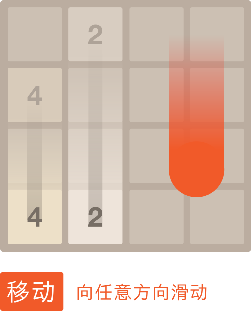
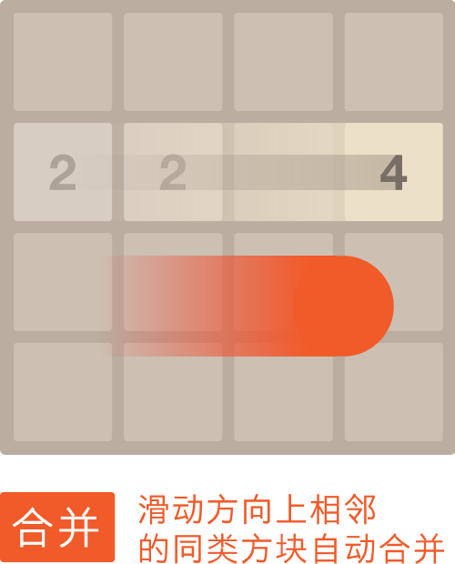

上下左右滑动屏幕或上下左右键盘，当含有相同数字的方块连在一起时，他们就会合成一块！


游戏的目标只有一个：得到一个含有2048的数字方块！当然喽，分数越高就意味着离2048越近了~加油吧，祝大家玩的开心！
2048是一款非常火爆的益智游戏，很多网友自称“一旦玩上它就根本停不下来”，这是不是让你想到了不久前爆红的动作游戏“Flappy Bird”？其实，与Flappy Bird一样，2048也非常简单，其基于浏览器的HTML5技术，玩家只需要用方向键让16宫格内两两相同的数字碰撞就会诞生一个翻倍的数字。初始数字由2或者4构成，当界面全部被数字填满时，游戏就会结束。
根本停不下来？2048小游戏高分技巧攻略
这款游戏上手非常简单，但想让数字达到2048就非常难，需要玩家进行精确的测算。下面，笔者就带给大家一些2048游戏的高分攻略。
2048游戏的规则很简单：每次控制所有方块向同一个方向运动，两个相同数字的方块撞在一起之后合并成为他们的和，每次操作之后会在空白的方格处随机生成一个2或者4，最终得到一个“2048”的方块就算胜利了。如果16个格子全部填满并且相邻的格子都不相同也就是无法移动的话，那么游戏就会结束。
最大数和次大数在的那一列/行是满的
高分法则：
-
最大数尽可能放在角落。
-
数字按顺序紧邻排列。
-
首先满足最大数和次大数在的那一列/行是满的。
-
时刻注意活动较大数（32以上）旁边要有相近的数。
-
以大数所在的一行为主要移动方向
-
不要急于“清理桌面”。
需要注意的是，为了保持最大数在角落，所有最大数可能移动的方向都不能再操作了，比如选择了左上角，那么就不能向右和向下移动其他的方块，这样操作的灵活性会相对减少，难度就会增加。这时，建议玩家除了选定一个角以外，再固定一条边，将大的数字放这条边上，这样就可以朝三个方向移动，比如选定左上角，填满最大数右边的所有方块，就可以朝上，左，右三个方向移动了。
根本停不下来？2048小游戏高分技巧攻略